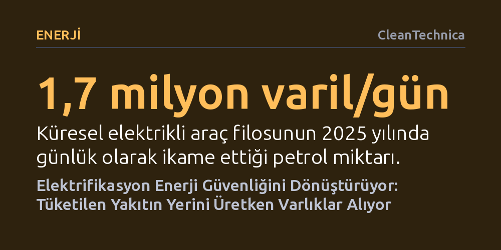

ENERJI · CleanTechnica · 2026-10-19
Fosil yakıtların aksine, güneş paneli ve batarya gibi temiz enerji teknolojileri ithal edildikten sonra yıllarca yerli kaynakla elektrik üretmeye devam ederek dışa bağımlılığı yapısal olarak kırıyor. Bu dönüşüm, enerji güvenliğini sürekli yakıt akışı sağlamaktan kalıcı üretken varlıklara sahip olmaya taşıyor.
Temiz teknoloji ithalatının, her tüketimde yeniden satın alınması gereken fosil yakıtların aksine geride kalıcı ve üretken bir altyapı bıraktığını göstererek enerji bağımsızlığı algısını değiştirir.

Fosil yakıt çağında enerji güvenliği anlayışı, tüketildiği anda yok olan kaynakların kesintisiz akışına dayanıyordu. Bir tanker petrol, boru hatlarından gelen doğalgaz ya da trenlerle taşınan kömür yakıldığında tükeniyor; ekonomik çarkların dönmesi için hemen yeni bir sevkiyatın yapılması gerekiyordu. Bu sürekli tüketim döngüsü, ithalatçı ülkeleri düzenli döviz bulmaya, üretici ülkelerin siyasi istikrarsızlıklarına ve deniz ticaret rotalarının güvenliğine kronik biçimde bağımlı kılıyordu.
Elektrifikasyon ve temiz enerji ticareti ise bu ilişkiyi kökten sarsıyor. Bir ülke güneş paneli, batarya, elektrikli araç veya trafo ithal ettiğinde, tüketilen bir maddeyi değil; uzun yıllar boyunca yerli güneş, rüzgâr ve su kaynaklarıyla çalışacak üretken ekipmanları bünyesine katmış oluyor. Tedarik zincirleri küresel kalmayı sürdürse de ortaya çıkan ekonomik ve jeopolitik bağımlılık yapısal olarak bütünüyle farklı bir nitelik kazanıyor.
Bu yapısal kırılmanın en somut yansımaları, kıt döviz kaynaklarını fosil yakıt ithalatına harcamak zorunda kalan gelişmekte olan ekonomilerde görülüyor. Pakistan bunun dikkat çekici bir örneğini oluşturuyor. Ülkede hızla yayılan çatı ve dağıtık güneş enerjisi kapasitesinin 2025 sonu itibarıyla yaklaşık 50 gigavata ulaşması öngörülüyor. Pakistan Merkez Bankası verilerine göre, azalan yakıt ithalatı sayesinde son altı yılda yaklaşık 7,1 milyar dolarlık döviz tasarrufu elde edildi; mevcut kurulu gücün 2026 yılı enerji ithalat faturasını 5,2 ila 7,8 milyar dolar daha azaltabileceği hesaplanıyor.
Pakistan bu panellerin ezici çoğunluğunu Çin'den ithal etti; yani uluslararası tedarik zincirine olan bağımlılık sıfırlanmadı. Ancak artık elektrik üretmek için her gün yeni bir yakıt sevkiyatı gerekmiyor; ithal edilen paneller Pakistan'ın kendi güneşiyle elektrik üretiyor. Merkez bankasının analizi, yakıt tasarrufundan elde edilen kümülatif döviz kazancının, ithal edilen panellerin maliyetini şimdiden büyük ölçüde amorti ettiğini ortaya koyuyor.
Benzer bir dönüşüm ulaştırma sektöründe de yaşanıyor. Uluslararası Enerji Ajansı verilerine göre küresel elektrikli araç filosu 2025 yılında günde yaklaşık 1,7 milyon varil petrol tüketimini ikame etti. Petrol ithalatçısı bir ülke otomobili ve bataryayı dışarıdan alabilir; fakat araç katettiği her kilometre için yeniden ham petrol satın almak zorunda kalmıyor. Etiyopya'nın döviz rezervlerini koruma amacıyla içten yanmalı araç ithalatını yasaklayıp elektrikli araçlara yönelmesi bu mantığın doğrudan bir sonucudur.
Temiz teknoloji ithalatı, sanılanın aksine kalıcı bir dışa bağımlılık yaratmak zorunda değil; gelişmekte olan ülkeler için sanayileşmenin ilk basamağını oluşturabilir. Sustainable Energy for All tahminlerine göre Afrika ülkeleri 2022 ile 2024 yılları arasında 12 milyar dolardan fazla güneş modülü, lityum iyon batarya ve elektrikli araç ithal etti. Güneş modüllerinin yüzde 90'ından fazlasının Çin'den gelmesi ciddi bir tedarik yoğunlaşması riski barındırsa da bu teçhizat yerel ekonomide yeni kurulumcular, finansman modelleri, bakım-onarım ağları ve yerli elektrik talebi doğuruyor.
Bu pazar dinamikleri birbirini besleyen bir çarka dönüşüyor. Madenlerde, tarım işletmelerinde ve baz istasyonlarında dizel jeneratörlerin yerini güneş ve batarya sistemleri alırken, elektrikli motosikletler ve otobüsler yerel olarak üretilen elektriğe ilave talep yaratıyor. Elektrik tüketimi ve depolama kapasitesi arttıkça sistemin birim maliyeti düşüyor; oluşan pazar büyüklüğü ise zamanla yerel montaj, yan sanayi ve nihayetinde yerli imalat yatırımlarını tetikliyor.
2020 sonrasında patlak veren jeopolitik krizler, küreselleşmenin kendiliğinden barış getireceği yönündeki iyimser beklentileri boşa çıkardı. Rusya'nın Ukrayna'yı işgali, ihracat kısıtlamaları ve ABD-Çin ekonomik rekabeti, kritik tedarikçilere aşırı bağımlı olmanın yarattığı riskleri gözler önüne serdi. Ancak buradan çıkarılacak doğru ders, her ülkenin panelden bataryaya kadar bütün tedarik zincirini kendi sınırları içine hapsetmeye çalışması değildir. Böyle bir içe kapanma, temiz teknolojileri ucuz ve erişilebilir kılan devasa imalat ölçeğini heba eder.
Akılcı strateji mutlak kendi kendine yetme değil, 'stratejik karşılıklı bağımlılık' kurmaktır. Tek bir tedarikçi yerine alternatif ortaklar, tek bir darboğaz yerine çoklu ticaret rotaları, yerel şokları emecek güçlü şebekeler ve depolama altyapısı inşa edilmelidir. Tıpkı Ukrayna'nın işgalden hemen sonra Avrupa elektrik şebekesiyle senkronize olarak altyapı saldırılarına karşı esneklik kazanması gibi, enerji güvenliği artık içe kapanarak değil, geride üretken varlık bırakan dayanıklı ve çok taraflı ağlar kurarak sağlanabilir.